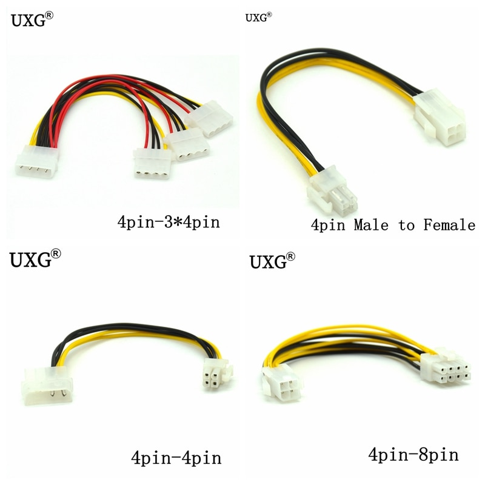

Accueil
B7
B8
B9
Sommaire
B8- Connecteur P4
Connecteur 4 broches pour le Pentium IV et ultérieurs, dénommé "P4"

Ce connecteur a deux fils noirs pour la terre et deux jaunes pour le +12VDC.
Voir aussi le connecteur Molex
En savoir plus à propos de l'alimentation